Shadow The Hedgehog (2005) allows the player to choose Shadow's destiny.
After surviving his fall from the Space Colony ARK at the end of Sonic Adventure 2, Shadow awakes with amnesia, unable to remember his past. In each mission one chooses from a Dark, Neutral, or Hero objective when available, to fill in details of Shadow's past and present, and progress to the next stage.
This leads to a story progression graph across the possible missions looking as follows:
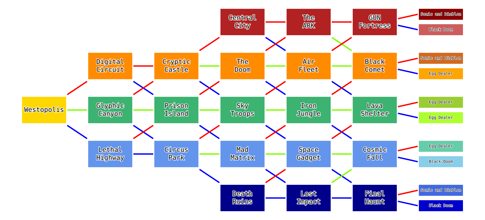
One starts out in stage 1 (Westopolis), then progresses through one connected mission from each of stages 2-6, and a then a final boss (colloquially stage 7 in this article).
One thing I wanted to do as a child, but didn't get round to until now, is to count how many possible story routes are there?
.
So let's do it!
My first thoughts were to start at each final boss mission, recursively work backwards through the graph multiplying by the number of edges entering the mission vertex, and finally summing over the all the boss missions.
This naive method doesn't work as each mission from the previous stage may have a different number of ways to reach it. We would need to take into account the non-regular tree-like structure arising from working backwards through the graph; some missions only have one parent (eg S4-M1 (Central City)), some have two (eg S3-M1 (Cryptic Castle)), and some have three (S3-M2 (Prison Island)).
Furthermore, with these trees we would be re-calculating the same values for number of ways to reach mission X
over and over. It would be like defining a Fibonacci function that uses recursion:
def fib(n: int) -> int:
if n == 1:
return 1
if n == 2:
return 1
return fib(n-1) + fib(n-2)
rather than caching the computed values.
A correct approach is to work forwards through the stages, counting how many ways there are to reach a mission by summing the number of ways to reach each parent
mission from the previous stage that is connected to the mission we are interested in. It's a bit like Pascal's Triangle.
We start from S1-M1 (Westopolis), which has a postulated value of 1. Every story starts from here, probably making it canon in the Sonic universe. It is for this reason (and consistency with another Wikipedia Image) that I have coloured it specially as yellow, even though it is inline with the rest of the neutral
missions.
Each S2 mission has one parent, S1-M1.
S3-M1 has two parents, S3-M2 has three parents, and S3-M3 has two parents. Since every parent has a value of 1, these missions also have pretty trivial values.
S4 is where things start to get interesting, as we are no longer just effectively counting the number of parents; we are properly summing the values of the parents. Look below at the full diagram.
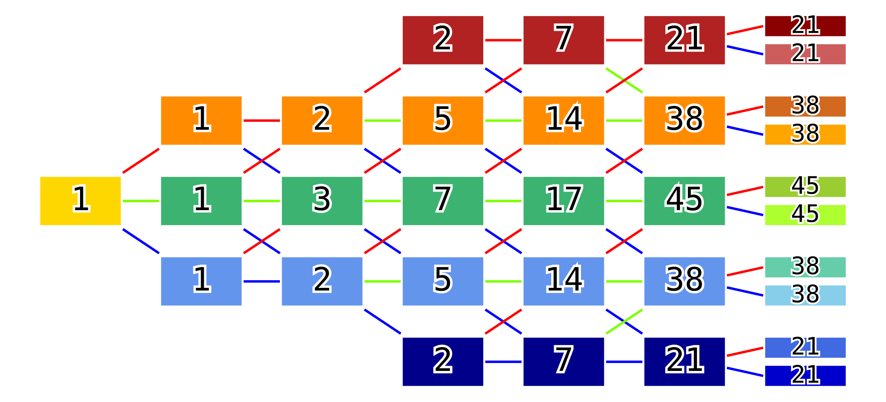
The number of routes from S1-M1 to each mission. The complexity grows pretty fast!
Having filled in the rest of the diagram, we can now sum up over all the S7 final boss values. Perhaps it makes sense colloquially to talk about a single S8-M1
mission, eg representing the credits, that all the S7 missions feed into, to act as a single summation point which stores this value.
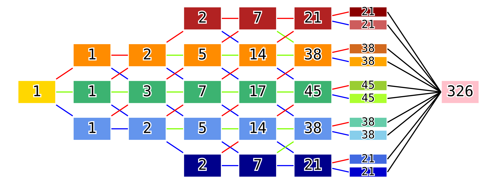
The number of routes from S1-M1 to each mission, including S8-M1.
And there we have it, 326, our answer to how many possible stories there are!
Fun fact: the developers of Shadow The Hedgehog gave each one of them a title. A full list is available on Sonic Retro. My personal favourite ending is semi-dark hero, very Machiavellian! Story route number 004 which leads to this is titled The Ultimate Ego
.
Thankfully one only has to complete each of the ten S7 bosses at least once to unlock The Last Way
, the eleventh, canonical ending to the game. One is not obliged to play through Westopolis 326 times...
The next question I have is how many times does each mission appear across these 326 stories?
. It is somewhat obvious that S1-M1 (Westopolis) appears all 326 times, and that the number of times each S7 boss appears is the number of routes to it. As for stages 2 to 6 we need a strategy.
Our diagrams above help to count the number of routes to S8-M1 starting from S1-M1, 326, and then we multiply this by the number of ways to get to S1-M1 (which we trivially postulated to be 1) to acquire the number of appearances of S1-M1, 326.
To count the number of appearances of Sx-My, we count the number of routes to S8-M1 starting from Sx-My, and then we multiply this by the number of routes to Sx-My from S1-M1, which we have previously calculated.
For this strategy we shall need some more diagrams. An example for S4-M4 (Mad Matrix) is below:
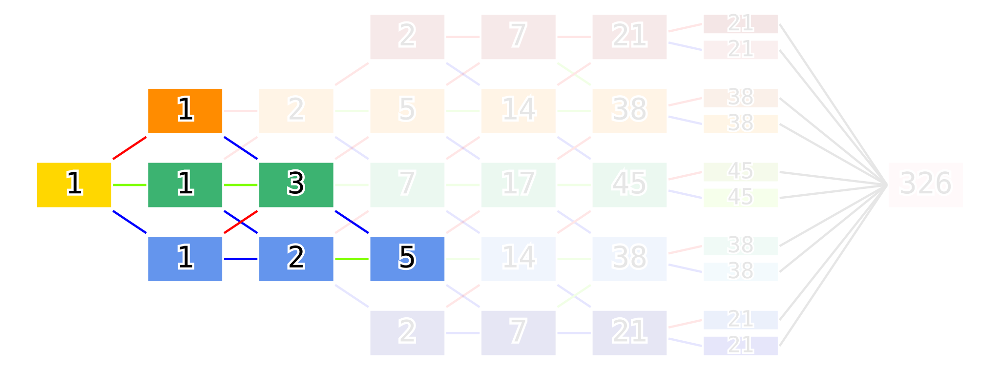
The number of routes from S1-M1 to S4-M4, previously calculated.
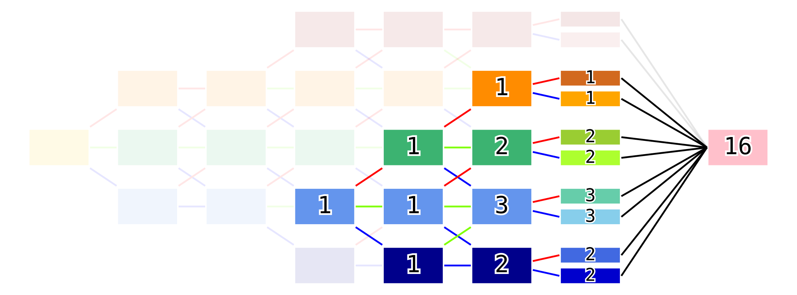
The number of routes from S4-M4 to S8-M1, newly calculated.
Multiplying 5 by 16 equals 80, the number of routes involving S4-M4. Computing this strategy by hand for all missions we obtain:
The number of routes from S1-M1 to each mission, previously calculated.
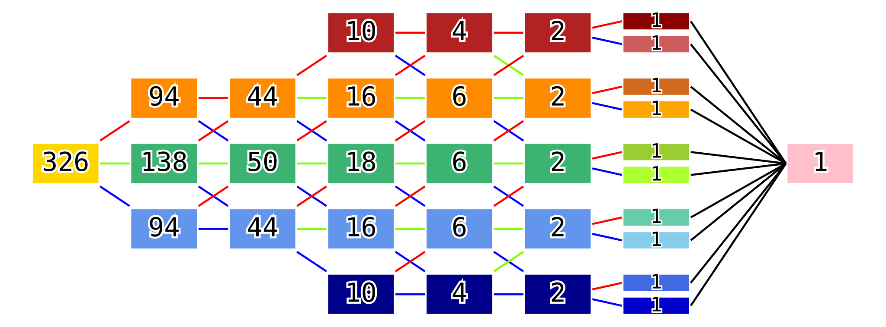
The number of routes from each mission to S8-M1.
and taking the element-wise product (Hadamard product?) of these two diagrams gives us our result.
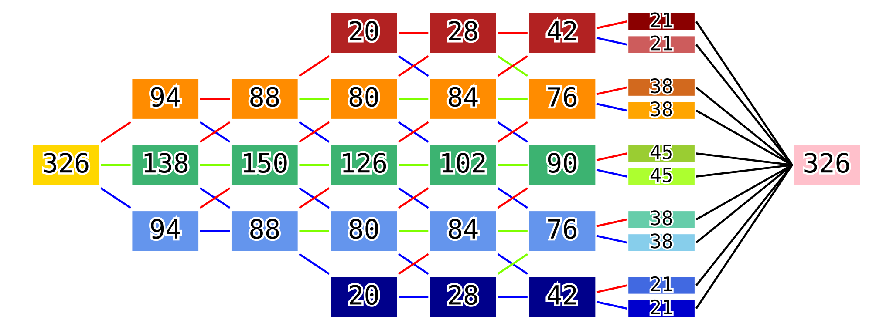
The number of routes including each mission, aka the number of times each mission appears across the 326 stories.
It is a good sanity check to verify that each stage's values sum to 326. This is because every one of the 326 routes goes through exactly one mission from each stage.
Upon closer inspection of the right-hand diagram above for the number of routes from each mission to S8-M1
, one will notice that the entries form a summation-tree / Pascal's-triangle-esque structure very similar to the left-hand diagram counting the number of routes from S1-M1 to each mission
, just from right-to-left instead of left-to-right.
This is not a coincidence, as the number of routes from Sx-My to S8-M1 is equivalent to the number of routes from S8-M1 to Sx-My
if we allow ourself to work backwards through the graph.
The number of routes from S1-M1 to each mission, previously calculated.
The number of routes from S8-M1 to each mission, traveling right-to-left, previously calculated as the number of routes from each mission to S8-M1, traveling left-to-right.
Seeing each mission Sx-My as a gluing point
/ fixed point between routes from S1-M1 to Sx-My and from S8-M1 to Sx-My, it should be clear that the number of routes from S1-M1 to S8-M1 that include Sx-My is the product of the number of routes on each side leading to Sx-My. Hence we take the element-wise product of these two diagrams, as we did before.
The number of routes including each mission, aka the number of times each mission appears across the 326 stories, previously calculated.
This is a neat trick of a strategy, that I only spotted after hand-computing all the values for the first strategy. You live and learn. See this as us discovering the trick from first principles, rather than wasted time.
This is a hybrid combination of both diagrams from strategy 1's S4-M4 example, allowing us to track routes tagged
by which mission My they pass through in a fixed stage of interest Sx. These indicator function tags, Iy, can then be toggled (assigned a value of 0 or 1) at the end to indicate the number of routes that passed through Sx-My.
Since strategy 1 used S4-M4 as an example, we will use S4 in this strategy's example.
Starting in S4 with the number of routes from S1-M1 to S4-My, we multiply each S4-My value by an indicator function Iy and proceed forwards as though we are counting the total number of possible routes to S8-M1 (which we know is 326). This strategy allows us to see the number of routes through each S4-My simultaneously, instead of calculating the number of routes from S4-My to S8-M1 in an isolated way for each y as we did in strategy 1.
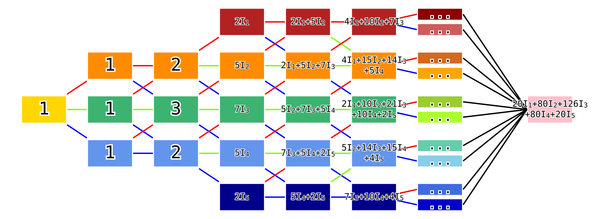
We can observe, in real time as we travel rightwards through the graph, the accumulation of the number of possible routes, partitioned by which S4 mission they passed through.
Taking for example I4=1 and Iy=0 otherwise we get our answer of 80 in the S8-M1 mission value.
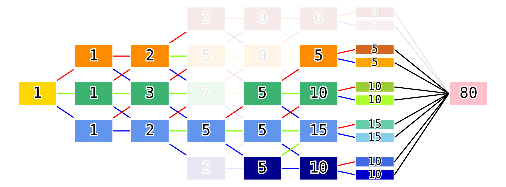
Setting I4=1 and Iy=0 otherwise indicates the routes that pass through S4-M4, of which there are 80.
Effectively in strategy 1's S4-M4 example we had preemptively assigned I4=1 and Iy=0 for y!=4, reset S4-M4's value from 5 to 1, and then re-multiplied by 5 (the number of routes from S1-M1 to S4-My) at the end.
This strategy feels a bit bulkier than strategy 1 and 2, but it more explicitly partitions the 326 routes into 20I1+80I2+126I3+80I4+20I5, rather than us just relying on intuition and non-constructive proofs that the equivalence classes sizes must sum to 326. I wanted to include indicator functions into this article since beginning writing it, and it took me until after writing strategies 1 and 2 to have enough examples to see how to structure strategy 3. It has been worth it I think.
This strategy is also extensible in that we could use multiple families of indicator functions, one for each stage, to count the number of routes through multiple fixed missions.
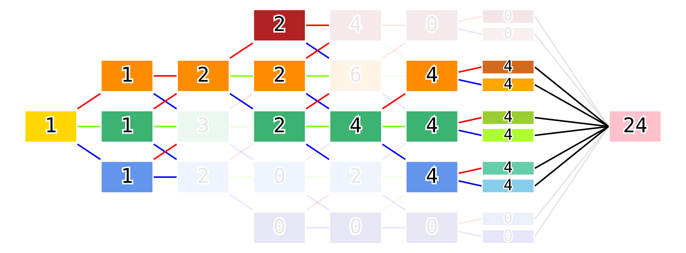
Computing the number of routes through both S3-M1 (Cryptic Castle) and S5-M3 (Iron Jungle), incase one wants to fight the Egg Breaker mini-boss twice (yes there's also an Egg Breaker at the end of Mad Matrix too).
You know what they say, the more the merrier!
- Dr Eggman as Egg Breaker after Mad Matrix.
Finally let's compute how many times one would have to complete each dark neutral and hero objective in each mission across the 326 stories.
It doesn't take too much thinking to realize that the number of routes from S1-M1 to S8-M1 via Sx-MyD, that is the dark objective of mission Sx-My, is equal to the number of routes from S1-M1 to Sx-My multiplied by the number of routes from S(x+1)D-My to S8-M1, where S(x+1)D-My is the mission that follows Sx-MyD ie the mission after completing the dark objective in Sx-My. Mutatis mutandis the same holds for Sx-MyN and Sx-MyH.
As a side note I chose this <sup> - <sub> notation loosely based on tensor abstract index notation and also Sonic Retro's library sequences page, but don't overthink it.
So let's take our favourite example S4-M4 (Mad Matrix). S5D-M4 is S5-M3 (Iron Jungle), S5N-M4 is S5-M4 (Space Gadget), and S5H-M4 is S5-M5 (Lost Impact). The number of routes from S1-M1 to S4-M4 is 5. 5*6=30, 5*6=30, 5*4=20. Completing the third diagram below:
The number of routes from S1-M1 to each mission, previously calculated.
The number of routes from each mission to S8-M1, previously calculated.
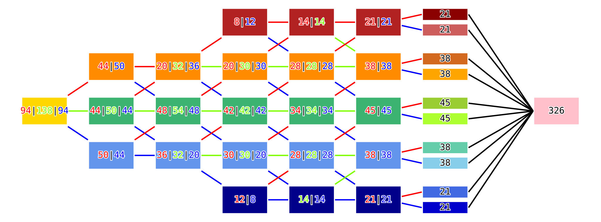
The number of times each objective appears over the 326 stories.
And there we are! It looks like Shadow is running against the Republicans and Democrats, and is only polling ahead in S1-M1 (Westopolis), S2-M2 (Glyphic Canyon), and S3-M2 (Prison Island)...
It also makes computational sense that for each mission the sum over the objectives of the number of times one has to play each objective totals to the number of times that one has to play through the mission full-stop.
are equal since we discovered in strategy 2 that the diagram showing the number of routes from Sx-My to S8-M1 forms a Pascal's-Triangle-esque structure from right to left.
I took special care to check which edges of the story graph are Dark, Neutral, and Hero, as there are several incorrect images online.
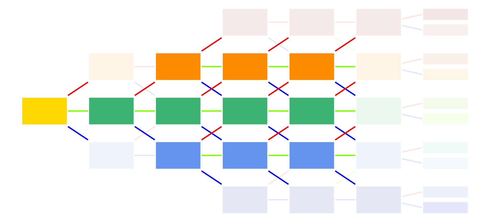
The eleven missions with three objectives are clear.
They all have dark ↗ upwards, neutral → forwards, and hero ↘ downwards.
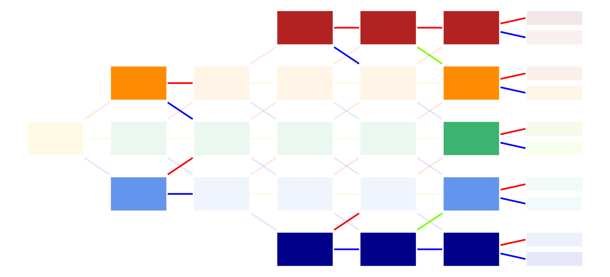
The eleven missions with two objectives differ.
S2-M1 (Digital Circuit) and S4-M1 (Central City) have dark → forwards and hero ↘ downwards.
S5-M1 (The ARK) has dark → forwards and neutral ↘ downwards.
S2-M3 (Lethal Highway) and S4-M5 (Death Ruins) have dark ↗ upwards and hero → forwards.
S5-M5 (Lost Impact) has neutral ↗ upwards and hero → forwards.
All S6 missions have dark ↗ upwards and hero ↘ downwards.
I think the minimum number of missions required to reach all ten endings is 11. S1-M1, S2-M2, S3-M2, S4-M3, S5-M2 and S5-M4, S6-M1 to S6-M5.
The shape of the graph reminds me of Neural Networks, and Turán Graphs for some reason. Probably the way we use indicator functions makes it look like we're putting multiple graphs together.
These diagrams were created by me, jb2170, hereby licensed under CC-BY-NC-SA-4.0. Have fun!
{kind=link}